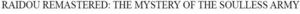

Trade Mark Journal No.2025/027 4 July 2025
WO0000001859896 (9,41)
Office of origin: Japan
Date of International Registration:15 April 2025
Date of designation in the UK:
15 April 2025

International priority date claimed: 28 March 2025
(Japan)
- Class 9
- Computer game programs; computer game software; video game software; video game programs; video game discs and cartridges; computer game software for use on mobile and cellular phones; mobile phone straps; cases for cell phones; downloadable graphics, images and moving images for computers, video game machines or mobile phones; downloadable computer game software; downloadable music files; sound recording discs; pre-recorded audio and video compact discs; compact discs featuring music, video game sounds and dialogues; recorded video discs and video tapes; prerecorded music videos; electronic publications, downloadable; phonograph records; downloadable cryptographic keys for receiving and spending crypto assets; downloadable computer software for managing crypto asset transactions using blockchain technology; application software for blockchain technology; computer software for blockchain technology; virtual reality game software; downloadable text, image, video, music, and audio files authenticated by non-fungible tokens [NFT]; downloadable image files containing trading cards authenticated by non-fungible tokens [NFT].
- Class 41
- Entertainment services, namely, providing on-line video games and on-line computer games; providing information on on-line games; providing non-downloadable on-line computer graphics, videos and images; providing amusement facilities; organization, production and presentation of video and computer game events; arranging and conducting of game events; organization or arrangement of game tournaments; providing information about amusement facilities; providing on-line music, not downloadable.
SEGA CORPORATION